Next: Bibliography
Alexis Aposporidis
A Primal-Dual Formulation for the Bingham Flow
Emory University
400 Dowman Drive
W401
Atlanta
GA30322
USA
aapospo@emory.edu
Alessandro Veneziani
Eldad Haber
The Bingham flow is an example of a Stokes-type equation with
shear-dependent viscosity. If
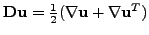 and
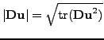, the equations read
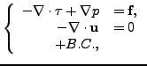
and
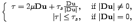
where the velocity
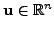, 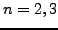 and
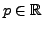
are the unknowns and , 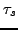 are given constants. Due to its
non-differentiability for
, a regularization of the form
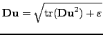 (
) is necessary. It is a
well-known fact that applying a nonlinear solver such as Newton or Picard
to these equations results in a high number of outer iterations,
especially for small choices of
[1]. In this talk we
suggest an alternative approach inspired by [6]: We introduce a dual
variable
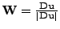, the equations for the Bingham flow
are then reformulated as
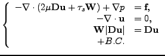
We address a few properties of this formulation and its numerical
solution. Moreover, we perform several numerical experiments for solving
the Bingham equations in this formulation, including the lid-driven
cavity test and an example where the analytical solution is known. These
experiments indicate a significant reduction in the number of nonlinear
iterations over the nonlinear solvers of the equations in primal
variables.
Acknowledgement:
We thank M. Olshanskii for fruitful discussions.
Next: Bibliography
root
2010-03-02